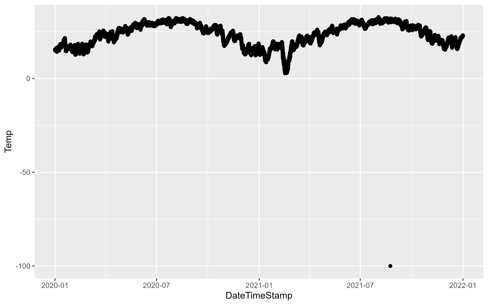
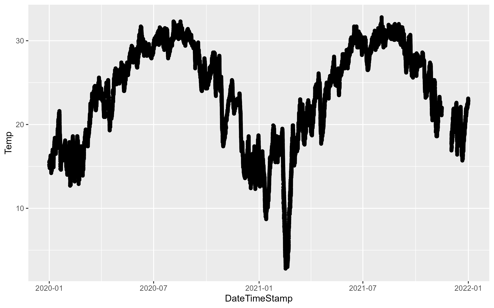
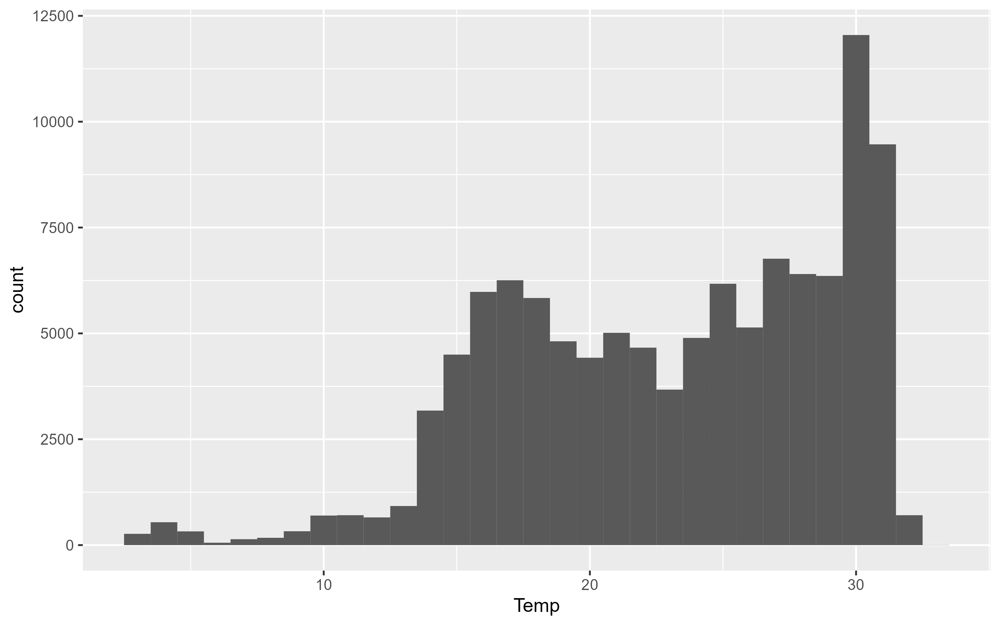
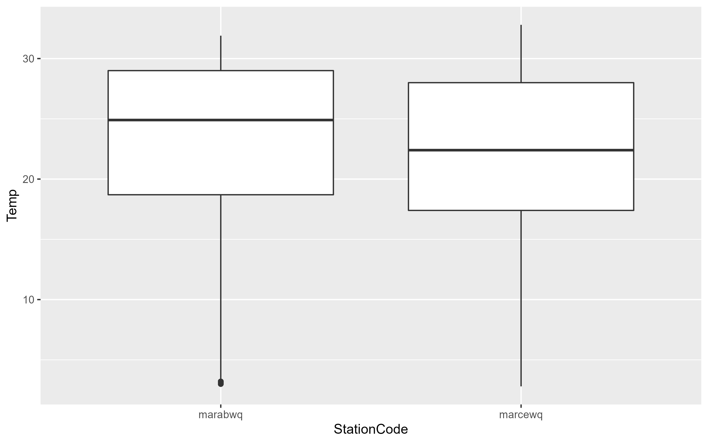
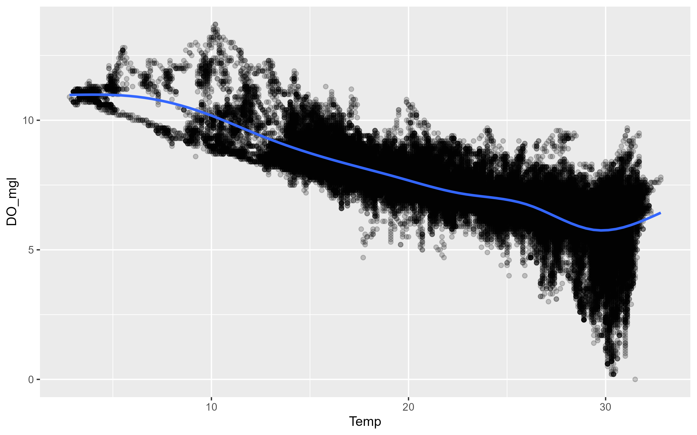
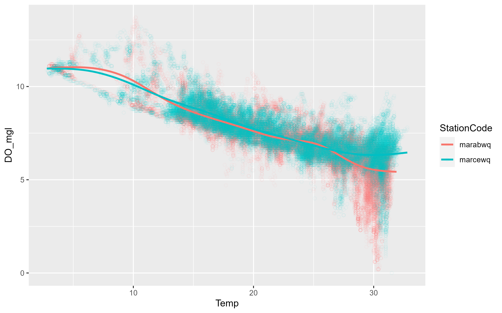
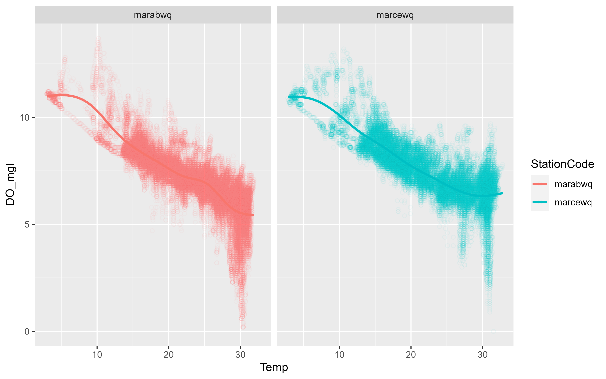
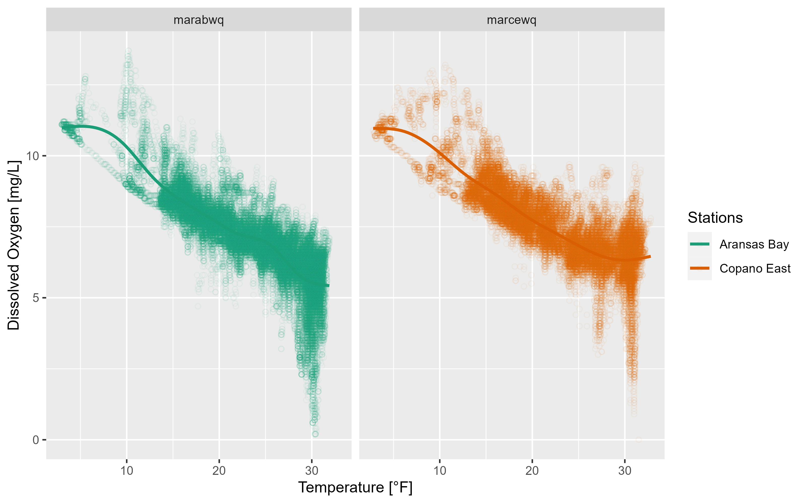

install.packages("tidyverse")2 Data Exploration
This is a basic introduction to importing and tidying, plotting, summarizing, and exporting data using the tidyverse family of functions. This is a very basic primer, for more indepth discussion see: …
To get started, make sure you have the tidyverse installed. The tidyverse is actually a set of 8 packages designed to work together using a common set of design philosophies. You can doo all the things described below, without tidyverse packages, but I think it is easier to review code that is written using the tidyverse approach.
Install the required packages:
Load the packages (you will get a message indicating some function conflicts, don’t worry about that for now:
── Attaching packages ─────────────────────────────────────── tidyverse 1.3.1 ──✔ ggplot2 3.3.6 ✔ purrr 0.3.4
✔ tibble 3.1.7 ✔ dplyr 1.0.9
✔ tidyr 1.2.0 ✔ stringr 1.4.0
✔ readr 2.1.2 ✔ forcats 0.5.1── Conflicts ────────────────────────────────────────── tidyverse_conflicts() ──
✖ dplyr::filter() masks stats::filter()
✖ dplyr::lag() masks stats::lag()When you load tidyverse, you will see the 8 different packages.
- ggplot2 is primarily used to plot data.
- tibble is a data structure that extends the native data.frame structure in base R.
- tidyr provides tools to orient or transform data from wide to narrow formats and vice versa. It also allows nesting and unnesting of datasets.
- readr is used to read (and write) data into R from CSV, TSV and other delimited text files.
- purrr is a functional programming toolkit (don’t worry about this for now).
- dplyr provides many functions (creating new variables, grouping by variables, joining data, summarizing data, etc.) for working with tibbles and dataframes.
- stringr has functions for easily manipulating character strings.
- forcats functions for creating and reordering “factor” variables.
2.1 Import Data
self-note - create multisite dataset (flow?)
One of the first steps in any data analysis project is importing or reading data into R. For now, we will focus on reading in data from comma separated value (CSV), tab seperated value (TSV), and similar delimited text files. For most projects, it is useful to work off a singular data snapshot. So once you download your data and have it in your project, do not manipulate the data file1.
Obtain your data and copy it into the data folder in your R project. If you want to work along, download the following
Use the read_csv() function from the readr package to import the data and assign it to a variable. The console will print some information telling you what type of variable it made each column of the csv and if there are any problems.
df <- read_csv(file = "data/easterwood.csv")Rows: 4045 Columns: 5
── Column specification ────────────────────────────────────────────────────────
Delimiter: ","
chr (1): name
dbl (3): station, dailymaximumdrybulbtemperature, dailyprecipitation
date (1): date
ℹ Use `spec()` to retrieve the full column specification for this data.
ℹ Specify the column types or set `show_col_types = FALSE` to quiet this message.read_csv() guesses the column types and sometimes it can guess wrong, so the safest option is to tell it what to expect using the col_types argument. This argument takes a string where each character represents one column. Here we will tell it to expect a character, Date, character, number, number which is represented as cDcnn.
df <- read_csv(file = "data/easterwood.csv",
col_types = "cDcnn")
df# A tibble: 4,045 × 5
station date name dailymaximumdry… dailyprecipitat…
<chr> <date> <chr> <dbl> <dbl>
1 74746003904 2010-07-31 COLLEGE STATION EAS… 99 0
2 74746003904 2010-08-01 COLLEGE STATION EAS… 102 0
3 74746003904 2010-08-02 COLLEGE STATION EAS… 101 0
4 74746003904 2010-08-03 COLLEGE STATION EAS… 100 0
5 74746003904 2010-08-04 COLLEGE STATION EAS… 99 0
6 74746003904 2010-08-05 COLLEGE STATION EAS… 99 0
7 74746003904 2010-08-06 COLLEGE STATION EAS… 99 0
8 74746003904 2010-08-07 COLLEGE STATION EAS… 99 0
9 74746003904 2010-08-08 COLLEGE STATION EAS… 99 0
10 74746003904 2010-08-09 COLLEGE STATION EAS… 100 0
# … with 4,035 more rowsTSV and other delimited files are read in the same way but with read_delim() or read_tsv(). If your data is in .xlsx format, the readxl pacakge is required. In readxl there is a read_xlsx() function that works similar to the read_csv() function except you can specify the sheet and range of cells to read from. The col_types argument also needs to be spelled out as a character vector such as col_types = c("text", "date", "text", "numeric", "numeric").
If you have multiple files with the same column names you can read them into the same data frame. Here we read in multiple files and are more explicit about defining the column types:
files <- c("data/marabwq2020.csv", "data/marabwq2021.csv", "data/marcewq2020.csv", "data/marcewq2021.csv")
df <- read_csv(file = files,
col_types = cols_only(
StationCode = col_factor(),
DateTimeStamp = col_datetime(format = "%m/%e/%Y %H:%M"),
Temp = col_number(),
F_Temp = col_character(),
SpCond = col_number(),
F_SpCond = col_character(),
Sal = col_number(),
F_Sal = col_character(),
DO_mgl = col_number(),
F_DO_mgl = col_character()
))
df# A tibble: 140,352 × 10
StationCode DateTimeStamp Temp F_Temp SpCond F_SpCond Sal F_Sal
<fct> <dttm> <dbl> <chr> <dbl> <chr> <dbl> <chr>
1 marabwq 2020-01-01 00:00:00 15.5 <0> 38.2 <0> 24.3 <0>
2 marabwq 2020-01-01 00:15:00 15.5 <0> 38.2 <0> 24.3 <0>
3 marabwq 2020-01-01 00:30:00 15.5 <0> 38.2 <0> 24.3 <0>
4 marabwq 2020-01-01 00:45:00 15.5 <0> 38.2 <0> 24.3 <0>
5 marabwq 2020-01-01 01:00:00 15.5 <0> 38.2 <0> 24.3 <0>
6 marabwq 2020-01-01 01:15:00 15.5 <0> 38.2 <0> 24.4 <0>
7 marabwq 2020-01-01 01:30:00 15.5 <0> 38.3 <0> 24.4 <0>
8 marabwq 2020-01-01 01:45:00 15.5 <0> 38.3 <0> 24.4 <0>
9 marabwq 2020-01-01 02:00:00 15.5 <0> 38.3 <0> 24.4 <0>
10 marabwq 2020-01-01 02:15:00 15.5 <0> 38.3 <0> 24.4 <0>
# … with 140,342 more rows, and 2 more variables: DO_mgl <dbl>, F_DO_mgl <chr>In this data we have a row for each date/time observation with associated columns for Station, Temperature, Specific Conductance, Salinity, and Dissolved Oxygen. The columns with the F_ prefix are qa/qc flags, <0> is accepted data.
2.2 Plot and Clean Data
ggplot2 is the graphics package for producing layered plots. The underlying philosophy of ggplot2 is to iteratively build your plots layer by layer which allows for some sophisticated plots. I won’t go into full details of using ggplot2 but lots of information is available in the ggplot2 book.
Three key things you need to learn: data, aesthetics, geoms.
data: a data frame or tibble with the data you want to plot.
aesthetics mappings (or aes): specify how variables will be visually depicted (x, y, color, shape, size, etc.).
geoms: are the layers that define how each layer is rendered (points, lines, bars, etc.).
Using the data we imported from above we can quickly create a basic scatter plot. Note the use of the + symbol to iteratively add layers to our plot. First we specify the data, then the geometry, and the aesthetic for that geom:
p1 <- ggplot(data = df, aes(x = DateTimeStamp, y = Temp)) +
geom_point()
p1Warning: Removed 4975 rows containing missing values (geom_point).
The above figure demonstrates the importance of plotting your data, the -100 value is clearly an issue. One thing we can do is filter the data to try and track down the issue. The dplyr package provides a number of functions to explore your data. Here, the data is filtered on the Temp column to include data less than -99:
df |>
filter(Temp < -99)# A tibble: 1 × 10
StationCode DateTimeStamp Temp F_Temp SpCond F_SpCond Sal F_Sal
<fct> <dttm> <dbl> <chr> <dbl> <chr> <dbl> <chr>
1 marcewq 2021-08-23 20:45:00 -100 <-3> [GIM] … -1211. <-3> [G… -99 <-3>…
# … with 2 more variables: DO_mgl <dbl>, F_DO_mgl <chr>The F_Temp qa flag is < -3 > indicating QA rejected the data point. So, let’s update the data to remove data that doesn’t have the < 0 > data flag:
df <- df |>
filter(F_Temp == "<0>")
df# A tibble: 111,090 × 10
StationCode DateTimeStamp Temp F_Temp SpCond F_SpCond Sal F_Sal
<fct> <dttm> <dbl> <chr> <dbl> <chr> <dbl> <chr>
1 marabwq 2020-01-01 00:00:00 15.5 <0> 38.2 <0> 24.3 <0>
2 marabwq 2020-01-01 00:15:00 15.5 <0> 38.2 <0> 24.3 <0>
3 marabwq 2020-01-01 00:30:00 15.5 <0> 38.2 <0> 24.3 <0>
4 marabwq 2020-01-01 00:45:00 15.5 <0> 38.2 <0> 24.3 <0>
5 marabwq 2020-01-01 01:00:00 15.5 <0> 38.2 <0> 24.3 <0>
6 marabwq 2020-01-01 01:15:00 15.5 <0> 38.2 <0> 24.4 <0>
7 marabwq 2020-01-01 01:30:00 15.5 <0> 38.3 <0> 24.4 <0>
8 marabwq 2020-01-01 01:45:00 15.5 <0> 38.3 <0> 24.4 <0>
9 marabwq 2020-01-01 02:00:00 15.5 <0> 38.3 <0> 24.4 <0>
10 marabwq 2020-01-01 02:15:00 15.5 <0> 38.3 <0> 24.4 <0>
# … with 111,080 more rows, and 2 more variables: DO_mgl <dbl>, F_DO_mgl <chr>This removes about 29,263 observations. Try plotting again:
p1 <- ggplot(data = df, aes(x = DateTimeStamp, y = Temp)) +
geom_point()
p1
We can use different geoms to explore the data:
p2 <- ggplot(data = df, aes(x = Temp)) +
geom_histogram(binwidth = 1)
p2
To explore relationships between two variables, use geom_point and geom_smooth with each variable mapped to x and y. In this example, ggplot2 prints a message indicating 834 rows of data had missing or NA values that could not be plotted. geom_mooth will plot the smooth line (using a loess or gam smooth) between two variables. If you want the linear regression drawn use the argument method = "lm".
p3 <- ggplot(data = df, aes(x = Temp, y = DO_mgl)) +
geom_point(alpha = 0.2) +
geom_smooth(se = FALSE)
p3`geom_smooth()` using method = 'gam' and formula 'y ~ s(x, bs = "cs")'Warning: Removed 834 rows containing non-finite values (stat_smooth).Warning: Removed 834 rows containing missing values (geom_point).
This is a good example to introduce the other important aesthetics in ggplot2. There is a clear negative relationship between Temperature and Dissolved Oxygen. Our data includes two sites, is there a difference between the two sites? We can map color to the site variable which will color each observation and each smooth a different color. Although shape and color can be used inside the aes() mapping function, you can assign them a value in the geom directly. Here we asign values for the shape and alpha properties in the point geom.
p3 <- ggplot(data = df, aes(x = Temp, y = DO_mgl, color = StationCode)) +
geom_point(shape = 21, alpha = 0.05) +
geom_smooth(se = FALSE)
p3`geom_smooth()` using method = 'gam' and formula 'y ~ s(x, bs = "cs")'Warning: Removed 834 rows containing non-finite values (stat_smooth).Warning: Removed 834 rows containing missing values (geom_point).
There was no reason to expect a difference and there isn’t. However the plot is muddy because there are so many overlying data points. We can also facet the graph by a variable. The following code also shows how you can just add another layer to your existing ggplot object:
p3 <- p3 +
facet_wrap(~StationCode)
p3`geom_smooth()` using method = 'gam' and formula 'y ~ s(x, bs = "cs")'Warning: Removed 834 rows containing non-finite values (stat_smooth).Warning: Removed 834 rows containing missing values (geom_point).
As you can see, ggplot2 allows you to rapidly iterate plots to explore data. When exploring the data, the formatting might not matter much, but if you want to export plots, we also need to take care of labels and general plot visual preferences.
p3 <- p3 +
labs(x = "Temperature [°F]", y = "Dissolved Oxygen [mg/L]") +
scale_colour_brewer(name = "Stations",
palette = "Dark2",
labels = c("Aransas Bay", "Copano East"))
p3`geom_smooth()` using method = 'gam' and formula 'y ~ s(x, bs = "cs")'Warning: Removed 834 rows containing non-finite values (stat_smooth).Warning: Removed 834 rows containing missing values (geom_point).
2.2.1 Themes
ggplot2 has a number of built-in themes. For most of our use cases (reports and papers), the grey background and white lines are not great choices. We recommend using the theme_bw() function at the bare minimum:
p3 +
theme_bw()`geom_smooth()` using method = 'gam' and formula 'y ~ s(x, bs = "cs")'Warning: Removed 834 rows containing non-finite values (stat_smooth).Warning: Removed 834 rows containing missing values (geom_point).
The twriTemplates package is available with a custom theme and some color palettes that are consistent with the Institute’s branding:
install.packages("twriTemplates",
repos = c(txwri = 'https://txwri.r-universe.dev',
CRAN = 'https://cloud.r-project.org'))library(twriTemplates)
p3 +
theme_TWRI_print() +
scale_color_discrete_twri(name = "Stations",
labels = c("Aransas Bay", "Copano East"))Warning: Removed 834 rows containing non-finite values (stat_smooth).Warning: Removed 834 rows containing missing values (geom_point).
2.3 Summarize Data
2.4 Export Data
Later on we will discuss loading web data sources directly into R, but for most of our work your best bet is to store raw data files inside the project↩︎